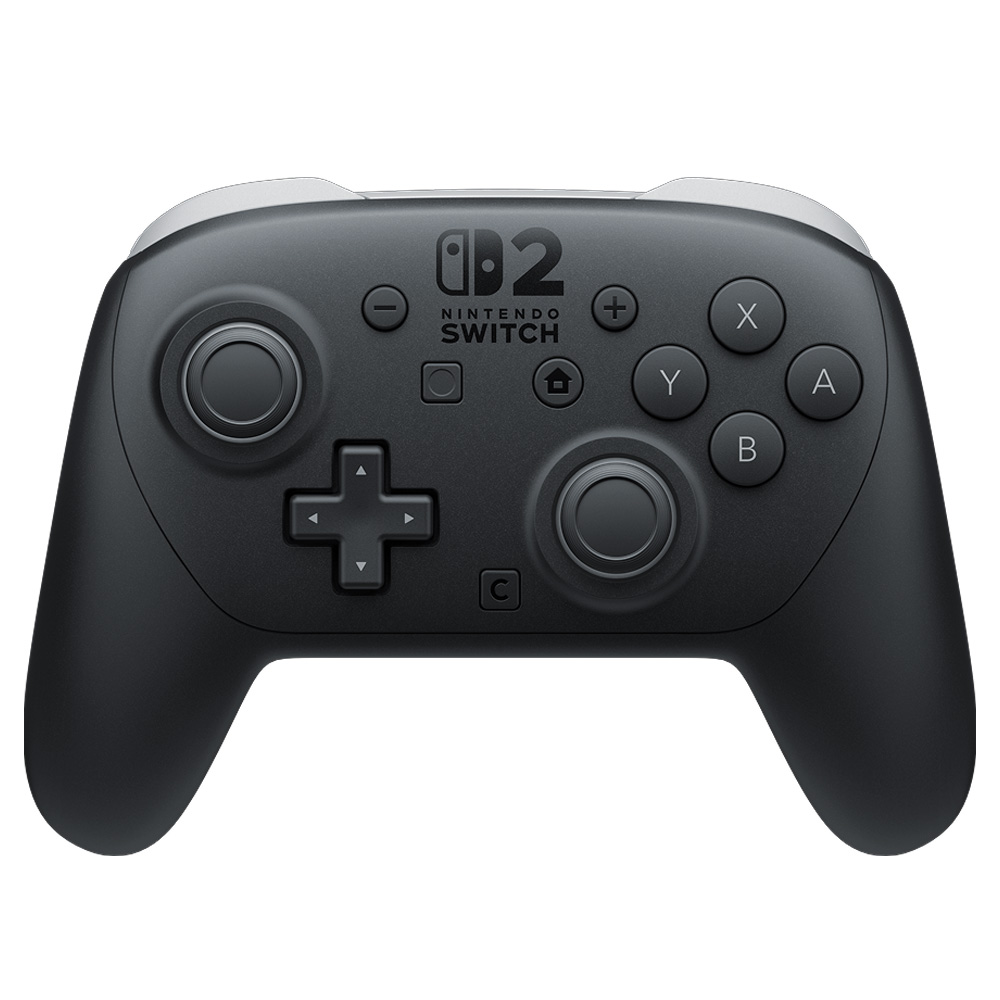

按键映射
CONTROLLER
电量未知
当前选择
背键绑定
GL / GR连接后读取设备映射
全部映射与操作说明
点击图中按键，选择 DualSense 输出目标。选择会修改草稿，应用后即时生效，保存后断电保留。背键也可用下拉菜单直接绑定。
| 实体按键 | 输出目标 |
|---|
手柄组合键仍可修改同一份映射，使用后点击“读取”同步。多个按键可以绑定同一目标；摇杆移动与陀螺仪不在此映射范围。
摇杆校准
未连接连接后可采集中心与外圈，保存后作为默认基准。
先松开两根摇杆保持静止；进入外圈采样后，两根摇杆分别贴住外沿缓慢转 3–5 圈。按提示补齐方向，再保存。换手柄后请重新校准。
震动调节
HAPTICS连接后读取震动参数